A HOME WITH ITS OWN INDOOR CLIMATE
我的五恒住宅
门窗关闭以后，住宅依然温和、干爽、新鲜、洁净、安静。
恒温恒湿恒氧恒洁恒静
五恒不是五台设备，而是一套可以被身体感知、也可以被数据验证的住宅室内气候。
A HOME WITH ITS OWN INDOOR CLIMATE
门窗关闭以后，住宅依然温和、干爽、新鲜、洁净、安静。
五恒不是五台设备，而是一套可以被身体感知、也可以被数据验证的住宅室内气候。
CHANGSHA RESIDENTIAL CLIMATE
冷暖只是表层。高含湿量、露点拖尾、冬季湿冷、关窗后的空气更新与噪声矛盾，才是住宅室内气候难以长期稳定的原因。
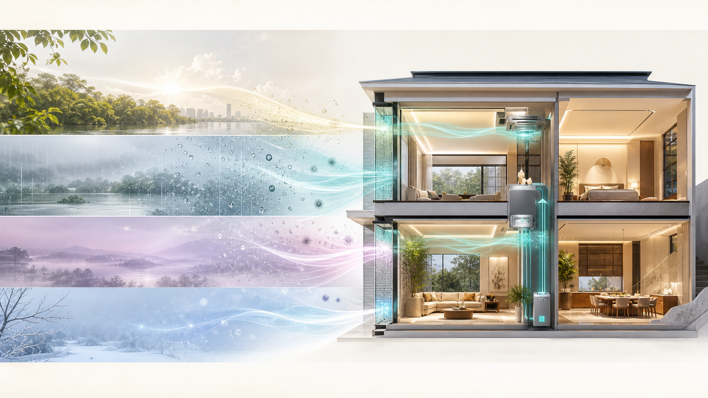
室外含湿量持续偏高，开窗并不能解决潮湿，反而可能把湿负荷带入室内。
温度降下来了，汗液蒸发和体感仍可能不轻盈；低温不等于干爽。
空气、墙面与窗边表面温度共同影响体感，地面温暖并不自动等于全身舒适。
住宅越追求安静、密闭与高品质装修，越需要持续、有组织的空气更新。
THE OLD WAY
空调处理显热，地暖改善冬季脚感，普通新风完成换气；但湿度、露点、压差、过滤、噪声与分空间控制经常被分散处理。
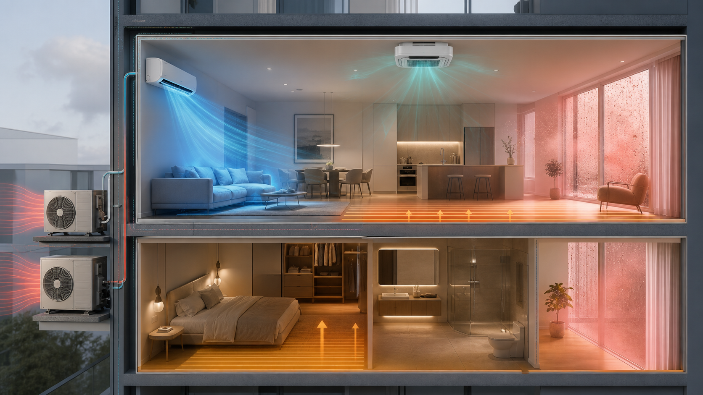
FIVE VERIFIABLE OUTCOMES
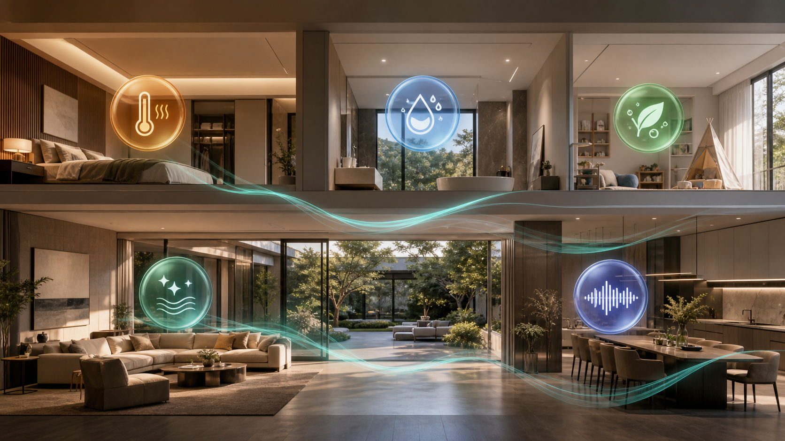
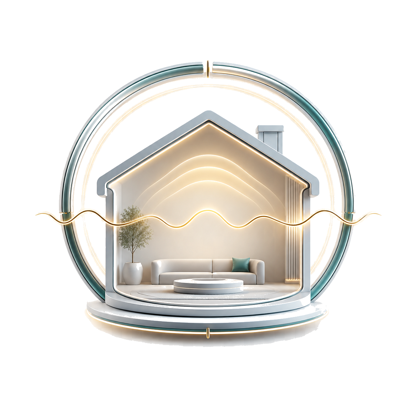
空气温度与表面温度连续稳定，减少冷热波动、局部冷感与强风感。
室温垂直温差表面温度主动处理潜热和含湿量，让露点远离冷表面与围护结构风险区。
相对湿度含湿量室内露点持续有组织地更新空气，以新风量和CO₂趋势判断通风是否真正有效。
设计新风量CO₂趋势通过过滤、压力组织和排风协同，持续控制颗粒物、异味与污染迁移。
PM2.5过滤等级房间压差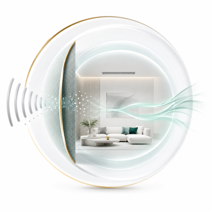
系统低存在感运行，不以明显噪声和送风扰动交换其他四项结果。
背景噪声末端声级风速以上为设计与验收的指标框架，不是脱离项目条件的统一承诺值。具体目标应结合建筑围护结构、人员密度、房间用途、室外气候和末端路线校核。
THE VALUE OF FIVE-CONSTANT LIVING
技术路线不应只停留在设备图纸里。它最终要转化成四季温和、湿度舒爽、无明显直吹、空气洁净、环境安静，以及可感知、可管理的日常体验。
冷热连续而柔和，减少房间之间和垂直方向的明显温差。
温度与湿度分别处理，不用过度降温掩盖空气中的水汽。
让人体主要停留区域远离高速冷风和局部热风扰动。
持续过滤、补充与组织新风，把污染物和异味有序带走。
将设备、风口与管路噪声作为设计目标，而不是入住后的补救。
设备与末端服从室内设计，让环境系统保持低存在感。
温湿度、CO₂和空气状态持续可见，控制不再只靠主观感受。
运行策略、维护计划和远程服务共同决定系统能否长久稳定。
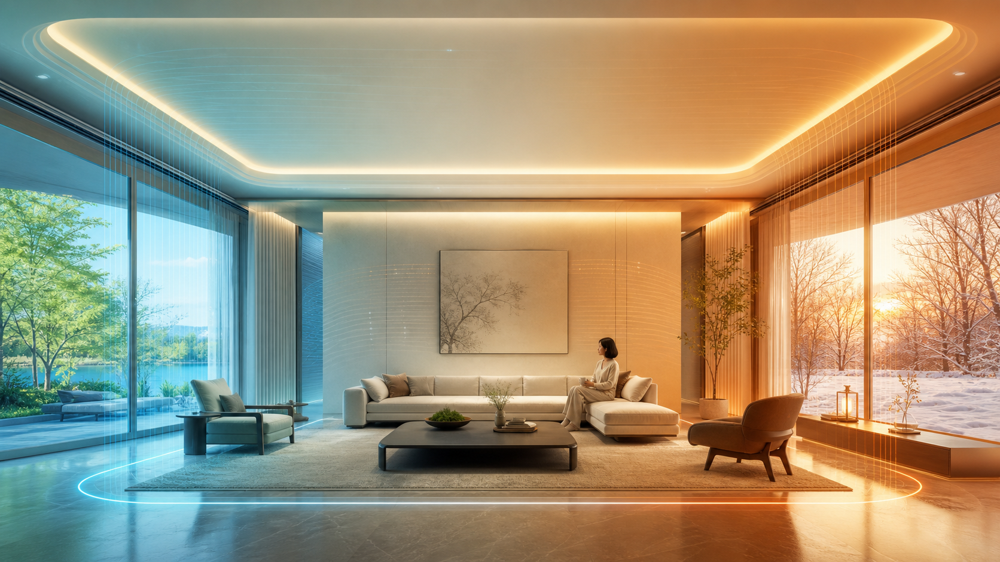
A WINDLESS FOUR-SEASON HOME
传统空调主要依靠空气高速循环完成换热，人体容易感知出风温度、风速和局部温差。五恒住宅强调空气温度、表面温度、湿度与末端共同协同，让冷热不必以强烈风感出现。
A BREATHING HOME
空气组织决定了新风是否真正经过人的呼吸区域。项目可根据建筑条件采用适合的送回风与排风路线，使洁净空气先服务于卧室和公共空间，再将热湿、异味和污染物引向排风区域。
价值表达参考慧科技五恒系统官方体系，并结合长沙、衡阳等湖南地区的高湿气候和住宅项目设计逻辑重新组织。具体温湿度、能耗、风速与过滤目标以项目设计条件和厂家技术文件为准。
DOAS SYSTEM ROUTE
DOAS 独立新风系统把新风、过滤、潜热和露点控制集中到空气主线；风盘、冷梁、地暖或地面调温等末端按项目条件协同，而不是继续叠加互不理解的设备。
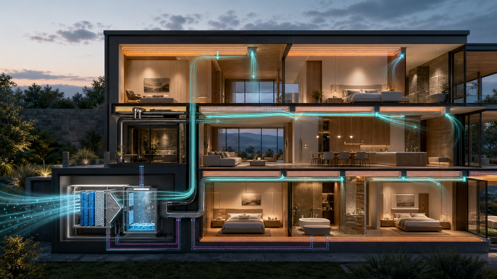
先确认温湿度、新风、洁净、噪声和分空间使用目标。
组织室外空气、过滤、新风除湿、送风、回排风与压差。
将湿负荷从显热处理中解耦，避免以过度降温代替除湿。
根据建筑、层高、装修和使用习惯选择合适的末端组合。
卧室、公共区、厨房与卫生间按负荷和压力关系分别控制。
COMFORT SCIENCE
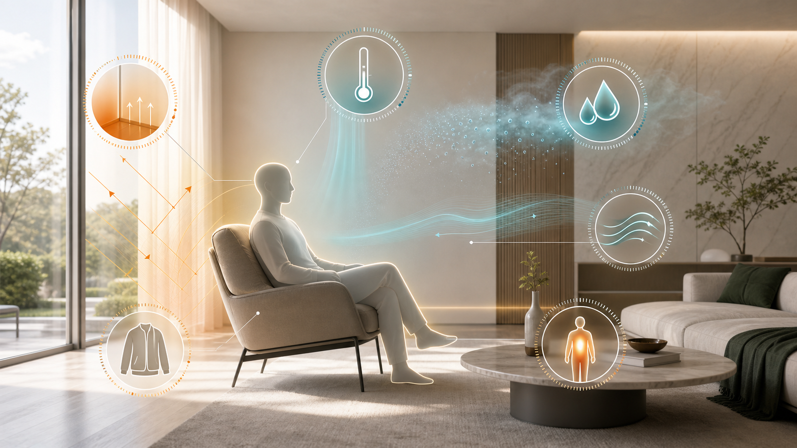
空气温度、平均辐射温度、湿度、气流速度、着衣量和代谢率共同决定体感。空调显示温度达标，不等于舒适已经成立。
当空气或表面温度接近露点，冷表面、风口和围护结构的结露风险上升。高湿地区必须同时管理温度与空气中的水汽。
“五恒”不是上述标准的原文术语，而是住宅室内环境目标在中文语境中的综合表达。标准用于建立设计边界和验证方法，不替代具体项目计算。
FROM DESIGN TO COMMISSIONING
设备采购只是其中一环。住宅围护结构、湿负荷、风量平衡、管线路由、噪声控制、控制逻辑和现场调试，必须由同一组环境目标贯穿。
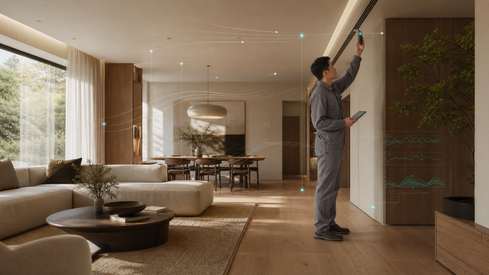
读取户型、朝向、围护结构、人员与使用场景，识别湿负荷和空气风险。
确定新风量、除湿能力、冷热末端、分区策略、排风与压差关系。
协调层高、风管水管、检修、风口、设备机房和室内设计边界。
核验关键节点、保温气密、冷凝水、消声与设备安装条件。
测量风量、温湿度、CO₂、噪声、压差和控制逻辑，不以“设备启动”代替交付。
形成滤网、排水、传感器和设备维护计划，让设计结果能够持续。
NATIONWIDE RESIDENTIAL APPLICATIONS
五恒系统已经在全国多座城市、不同住宅形态中形成长期应用。泽风将成熟的系统经验带入长沙、衡阳及湖南其他地区，让高湿气候下的住宅环境拥有更完整的本地设计与交付能力。
南京、上海、杭州、宁波、合肥等城市的住宅应用，为不同围护结构、空间尺度和家庭使用方式积累了持续经验。
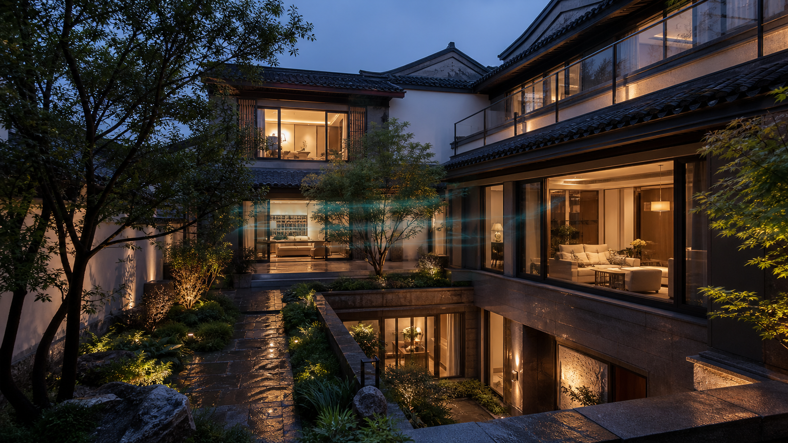
多楼层、地下空间、挑空客厅与庭院边界，需要分层分区、空气组织、排风关系和维护条件共同成立。
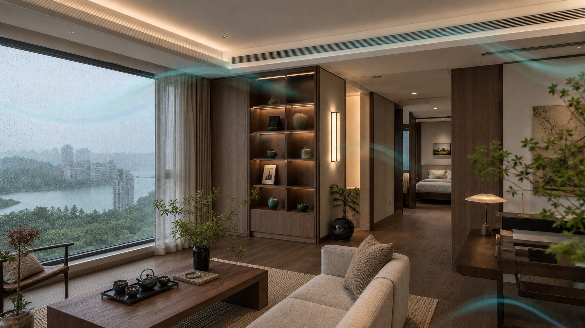
围绕梅雨高湿、过渡季回潮、冬季湿冷和长期关窗空气品质，形成更符合湖南住宅的设计与交付重点。
PROJECT EVIDENCE
每套项目在交付阶段形成温湿度、露点、风量、空气品质与声环境记录，让系统表现能够被持续查看、复核与优化。
A HOME WITH ITS OWN INDOOR CLIMATE
温度、湿度、空气、洁净与安静，不再由彼此分离的设备决定，而是在同一套住宅环境中持续协同。